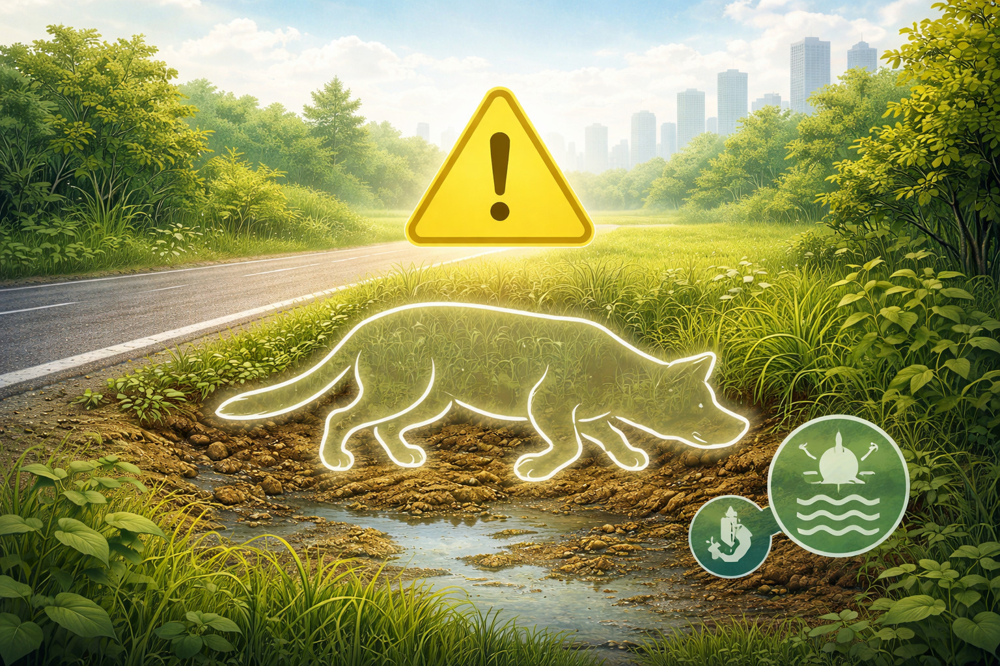
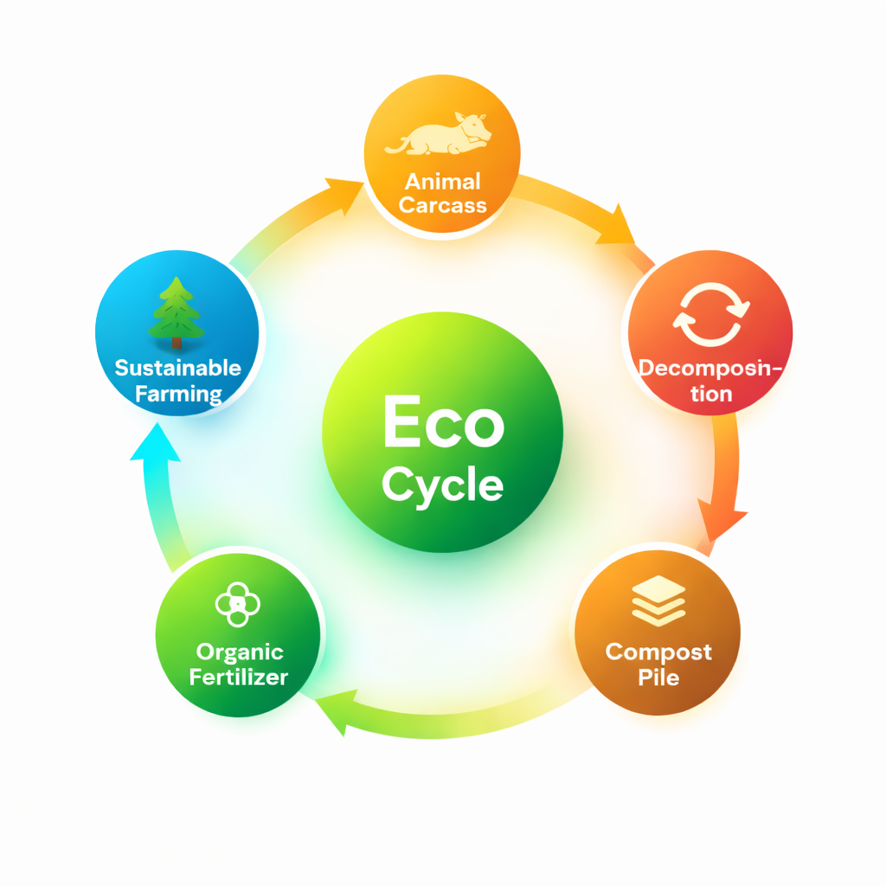
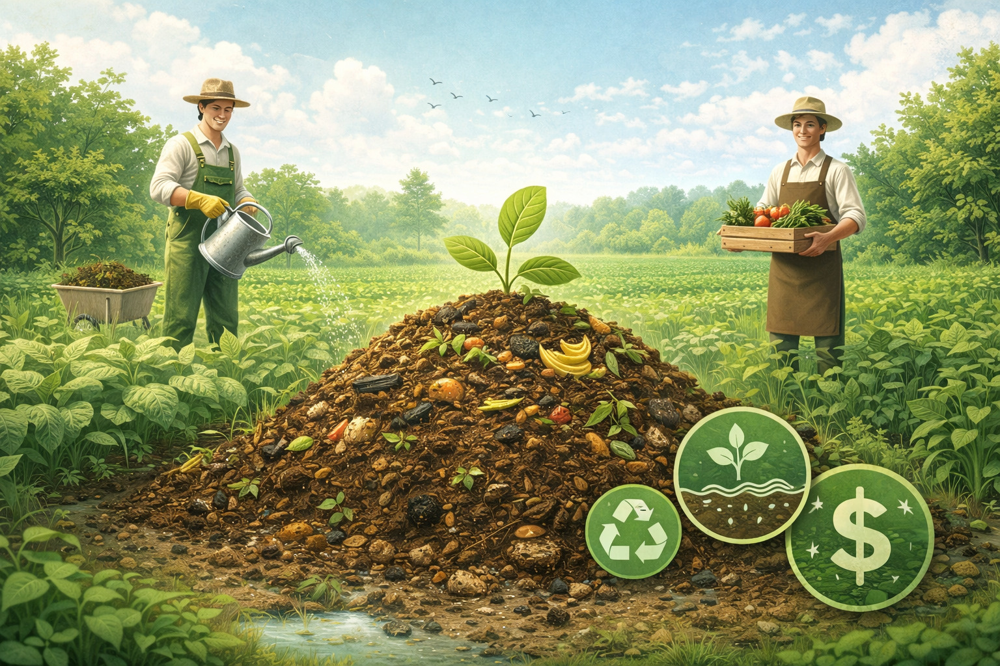

Understanding decomposition ecology, the science of composting, and how animal waste becomes life-giving fertilizer for our soil.
Most citizens are unaware of the environmental and public health risks posed by unmanaged animal carcasses. Awareness is the first step toward action. When we understand the problem, we can respond correctly — and turn a hazard into an agricultural opportunity.

Rotting carcasses release toxic gases like hydrogen sulfide and ammonia, causing respiratory illness in nearby communities.
Decomposing bodies attract flies, rats and mosquitoes — vectors for deadly diseases like cholera, anthrax and leptospirosis.
Leachates from carcasses seep into rivers and aquifers, contaminating water sources and affecting aquatic biodiversity.
Uncontrolled decomposition changes soil pH and nitrogen levels, damaging agricultural land and reducing crop yields.
Through scientifically managed composting, animal carcasses can be safely converted into nutrient-rich organic fertilizer — benefiting farmers and the ecosystem simultaneously.

Animal Carcass → Decomposition → Compost → Fertilizer → Farming
Trained municipal workers collect carcasses using protective gear and sealed vehicles to prevent contamination during transport to processing facilities.
Carcasses are treated with lime to reduce odour and pathogen load, then placed in compost windrows or biodigester units.
Microbes break down organic matter over 4–8 weeks in controlled compost beds with regular aeration and moisture management.
Partially composted material is cured for another 4 weeks, stabilising nutrients and eliminating remaining pathogens completely.
The final product — rich in nitrogen, phosphorus and potassium — is packaged and distributed to farmers, completing the ecological cycle.
